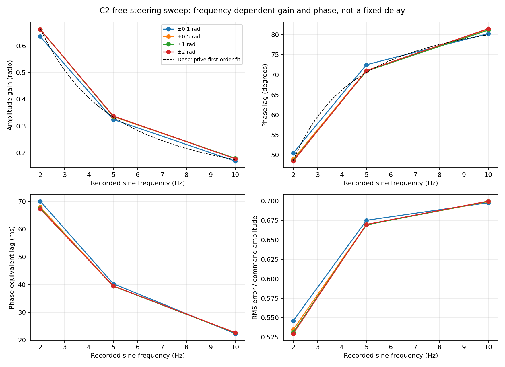
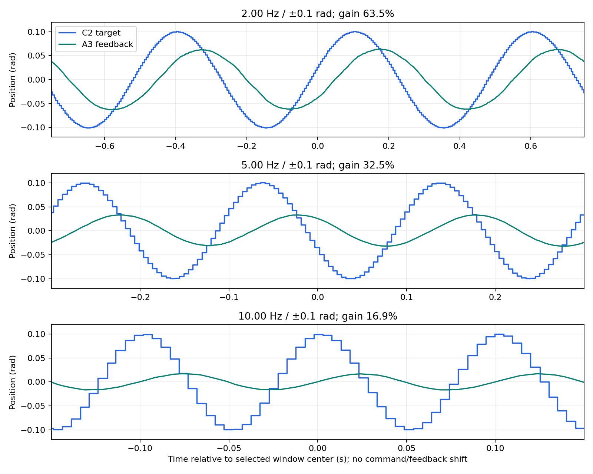

Free-steering / user-reported unchanged motor conditions. All filename labels checked against actual recorded commands.
Attenuation persists at low amplitude: limited tracking bandwidth, not merely large-command speed demand. Lag below means frequency-specific phase-equivalent lag, not pure latency. Torque is current-derived.
| Hz | Amplitude rad | Actual amplitude rad | Gain % | Phase lag deg | Lag ms | Error RMS rad | Peak speed rad/s | Peak torque Nm |
|---|---|---|---|---|---|---|---|---|
| 2.00 | 0.1 | 0.0635 | 63.5 | 50.5 | 70.12 | 0.0546 | 1.09 | 0.325 |
| 2.00 | 0.5 | 0.3311 | 66.2 | 49.0 | 67.99 | 0.2675 | 4.48 | 0.593 |
| 2.00 | 1 | 0.6617 | 66.2 | 48.6 | 67.51 | 0.5314 | 8.48 | 0.619 |
| 2.00 | 2 | 1.3239 | 66.2 | 48.5 | 67.30 | 1.0593 | 16.95 | 0.948 |
| 5.00 | 0.1 | 0.0324 | 32.5 | 72.5 | 40.29 | 0.0675 | 1.25 | 0.355 |
| 5.00 | 0.5 | 0.1676 | 33.6 | 71.1 | 39.50 | 0.3349 | 5.45 | 0.760 |
| 5.00 | 1 | 0.3363 | 33.7 | 71.0 | 39.42 | 0.6694 | 10.74 | 1.531 |
| 5.00 | 2 | 0.6745 | 33.8 | 71.1 | 39.48 | 1.3398 | 21.93 | 2.480 |
| 10.00 | 0.1 | 0.0168 | 16.9 | 80.3 | 22.31 | 0.0698 | 1.30 | 0.370 |
| 10.00 | 0.5 | 0.0889 | 17.9 | 81.5 | 22.63 | 0.3497 | 5.86 | 1.417 |
| 10.00 | 1 | 0.1786 | 17.9 | 81.2 | 22.55 | 0.6996 | 12.07 | 2.566 |
| 10.00 | 2 | 0.3543 | 17.8 | 81.5 | 22.65 | 1.3998 | 22.06 | 5.789 |


Descriptive first-order fit to amplitudes ≥0.5 rad: K=1.0053, tau=90.35 ms, model-implied corner=1.762 Hz (below tested range; not directly measured).
Complete conclusions, methods and limitations · JSON provenance and statistics · CSV table · Comparison PDF · Validation and tests
Approximately 197 Hz outgoing targets, no policy or 50 Hz interface test; firmware gains/limits/status and ground-loaded response are unknown. Plots are unshifted. Raw helper exit is not motor disable. Original reference report untouched; its old embedded source path predates relocation.